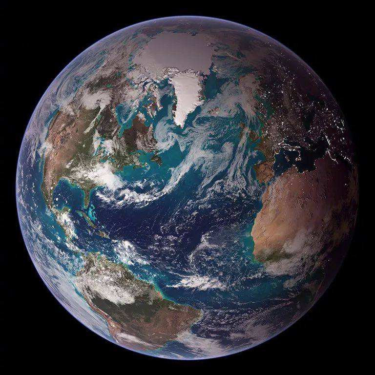

9月22日是北半球的秋分，同时也是南半球的春分，也就是说昨天是北半球入秋第一天，南半球入春第一天。
地球上有着明显的春夏秋冬，四季分明，但不是太阳系中每颗行星都有明显的四季变化。
行星上的季节变化由两个因素引起，轴倾角（axial tilt）和轨道偏心率（orbital eccentricity）。轴倾角指的是行星的自转轴相对于轨道面的倾斜程度。水星，金星和木星的轴倾角很小，地球，火星，土星，海王星的轴倾角都是二十多度，而天王星最夸张，轴倾角82度，和其他行星兄弟相比，几乎是躺着。
轨道偏心率简单说指的是远日点和近日点的变化比，太阳系所有的行星的轨道都是椭圆，轨道偏心率决定了椭圆轨道的扁平程度。
拿我们地球来说，轨道偏心率为0.02，环绕太阳的轨道几乎是圆形，所以这点对地球上的气候影响很小。地球的轴倾角为23.5°，我们星球上的季节变化主要由它决定，当北极偏向太阳时，北半球迎来了夏天，当北极偏离太阳时，北半球迎来了冬天。
水星，金星和木星上的轴倾角很小，这三颗行星上的季节变化很小。
水星，几乎没有季节变化。水星上的一天（一昼夜）相当于177个地球日，一年相当于88个地球日。另外由于没有大气层保护，水星昼夜温差极大，面向太阳的一面，白天温度可答430摄氏度，背向太阳的一面，夜晚的温度低至零下180摄氏度。
金星有着浓厚的大气层，导致其表面温度高达470摄氏度。多提一句，大气层中的温度随着距离地面的高度而不同，在其距离地面约30英里的大气层中，温度和地球相当。
火星的轴倾角是 24°，略高于地球，但火星轨道偏心率是0.09，是地球的四倍多，火星环绕太阳的轨道在1.64 AU和1.36 AU之间，这两种情况的加持下，导致火星上的季节变化比我们地球大很多。
我们都知道，火星上的大气很稀薄，约为地球的1%。另外引起我们注意的是，火星上的大气压力随着季节发生变化，火星上冬季的全球大气压力比夏季低25%，之所以有这种情况发生，是因为火星的轨道偏心率，以及火星两极干冰冰冠和二氧化碳的交换。火星北半球在冬至比在夏至，距离太阳近约10%，火星北半球冬至时，北极冰冠吸收的二氧化碳，比南极在同期吸收的多。
天王星上一年相当于84个地球年，轨道偏心率为0.06，它环绕太阳的轨道几乎也是圆形，但天王星的轴倾角为82度，这就导致天王星上长达四分之一的时间里有着极端的季节变化，当太阳光直射天王星极区时，其他地区就陷入了漫长、黑暗、寒冷的冬天。
参考：
https://science.nasa.gov/science-news/science-at-nasa/2000/interplanetaryseasons